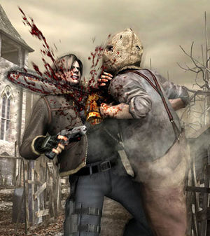
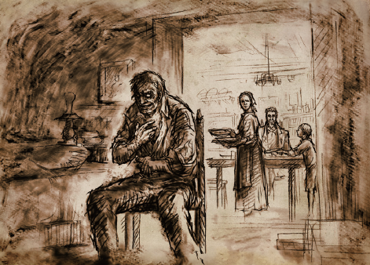

Resident Evil 4 é um dos jogos mais importantes da história do videogame, e certamente o que mais impactou a franquia criada pela Capcom nos anos 90. O jogo recebeu versões pra praticamente todo console que saiu depois dele, e todo mundo já jogou o game uma vez na vida ao menos, então aqui vai algumas curiosidades.
1: É o jogo da franquia com mais versões para consoles
Resident Evil 4 é um jogo extremamente bem sucedido, e semelhante ao que aconteceu na época de Street Fighter 2, a Capcom decidiu lançar o jogo para literalmente tudo o que conseguisse rodar ele.
Ao todo, o jogo conta com incríveis 15 versões, se contarmos os dois ports que ele ganhou para PC e abaixo a gente lista todas essas versões:
Gamecube, PS2, PC (versão horrível), Wii, iOS, Zeebo, Java, PS3, Xbox 360, Android, PS4, Xbox One, Nintendo Switch e Oculus Quest.
2: Referências a filmes
A franquia Resident Evil ama referências a filmes, e com Resident Evil 4 isso não é diferente. No jogo, encontramos diversas referências ao filme Leon the Professional. A primeiras delas está na arma empunhada pelo nosso protagonista. Matilda é o nome da parceira de Leon no filme. Além disso, a dificuldade mais alta do jogo chama-se Professional. Para completar, o modo especial da Ada tem a tela fortemente inspirada em La Femme Nikita.
3: Censura
Diferenças regionais em jogos é algo que não é tão incomum assim no mundo dos games, e Resident Evil 4 é mais um exemplo disso. No Japão, todas as cenas de decapitação do jogo foram removidas. O motivo isso é que segundo a legislação japonesa, é proibido que estas cenas sejam reproduzidas em filmes ou jogos.
4: Crianças
Você já parou para pensar por que não há crianças na vila em que Leon se infiltra para tentar resgatar Ashley? Bom, inicialmente a Capcom até havia pensado em coloca-las no jogo, mas devido a toda a controvérsia que isso iria gerar, eles preferiram só fazer Leon e companhia enfrentarem adultos, então acabou-se criando a explicação de que o Las Plagas, vírus que infecta os inimigos do jogo, mata crianças pois elas não conseguem resistir a ele.
